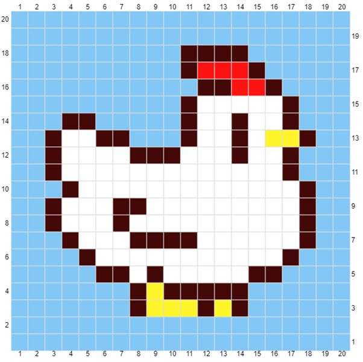

My First Tapestry Project
I had been seeing tapestry crochet projects online and I was amazed! You're telling me I can make pixel art in real life? It seemed so cool.
In this entry, I'll tell you about my first tapestry project and all I learned from it. Honestly, I'm not proud of the end result of this project at all, but I want to share everything, even the failures and what I learned from them. After all, that's what this blog is all about.
Inspiration and Sources
I had no idea how to tapestry crochet, and I wasn't even comfortable with changing colors yet, so this was definitely a big challenge.
After searching for a tapestry crochet tutorial online, I ended up using this one.
I didn't recreate the pattern the creator made, I just wanted to understand the process so I could use it for any pattern. Instead, I used this Stardew Valley chicken alpha pattern I found on Pinterest as a reference (I couldn't find the creator, sorry!)

Materials
These were the materials I used for this pattern:
- 4.5 mm hook
- Yarn colors: blue, black, white, yellow, and red (medium weight)
- Scissors
The Process
Tapestry crochet involves crocheting rows of single crochet, following an alpha pattern, such as the one I showed above. Each "pixel" in the pattern represents one single crochet.
Here's a general description of the process of crocheting any tapestry you want:
- Count the length of your alpha pattern in pixels. The pattern I used has 20 pixels of length.
- Start by making a slip knot and crochet as many chain stitches as the length of your pattern plus 1. In my case, I crocheted 21 chain stitches. The extra chain stitch represents starting a new row.
- Skip the first chain stitch and single crochet on all the subsequent chain stitches.
- Once you finish the first row of single crochet, do 1 chain stitch to start a new row and turn your work.
- Once you finish the first row of single crochet, do 1 chain stitch to start a new row and turn your work.
- Skip the first single crochet of the previous row and single crochet on all the subsequent stitches.
- Repeat this process until you finish all the rows in your pattern. When you finish, fasten off by doing a chain stitch and cutting the yarn with scissors.
If you have to change colors, don't finish the last stitch before the color change. Start the stitch as you normally would, but don't pull through. You should have 2 loops in your hook. Get your yarn with a different color and pull it through the two loops of the previous color.
In tapestry crochet, you always turn your work when starting a new row. It's important to distinguish the right side from the wrong side. Your first row is the right side, your second row in the wrong side, and so on. You should always keep the yarn you're not using on the wrong side.
Result
[To be uploaded]Challenges
The hardest part of this project was definitely managing my tension and I think that's clear in the end result. Some rows were way tighter than others, and some stitches were so tight that it was nearly impossible to insert my hook in them.
I also struggled with managing all the different colors at once, especially when I was crocheting on the wrong side. Sometimes I almost couldn't see where I had to insert my hook because of all the loose yarn.
Lessons Learned
This project taught me how to make tapestries and it helped me understand how to manage my tension better. I realized I was putting way too much tension and had to relax my grip on the yarn and hook.
After analyzing the end result, I noticed that some stitches weren't noticeable and there were some gaps in the lines. I searched online for ways to fix that. I found two different methods:
- After finishing your tapestry, use a needle to fill in the necessary stitches, as if you were embroidering.
- When crocheting your tapestry, yarn under instead of yarning over.
I didn't pick up my tapestry stardew valley chicken again (and probably won't), but I will definitely keep this in mind for future tapestry projects.
Conclusion
Despite not being happy with the final look of this project, I learned a lot. It helped me become comfortable with color changing and taught me to manage my tension. I also got good pointers on how to improve my tapestries in the future.